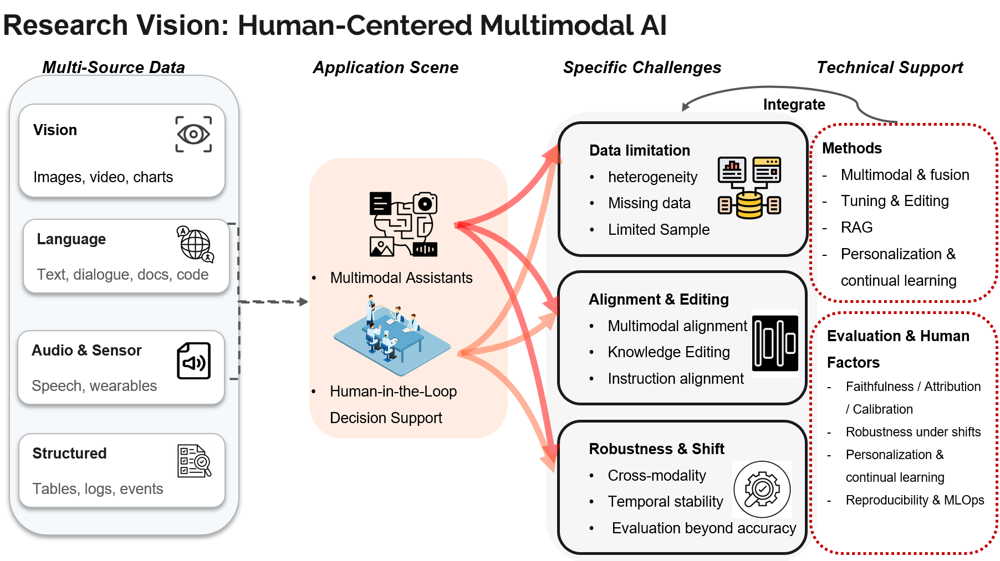
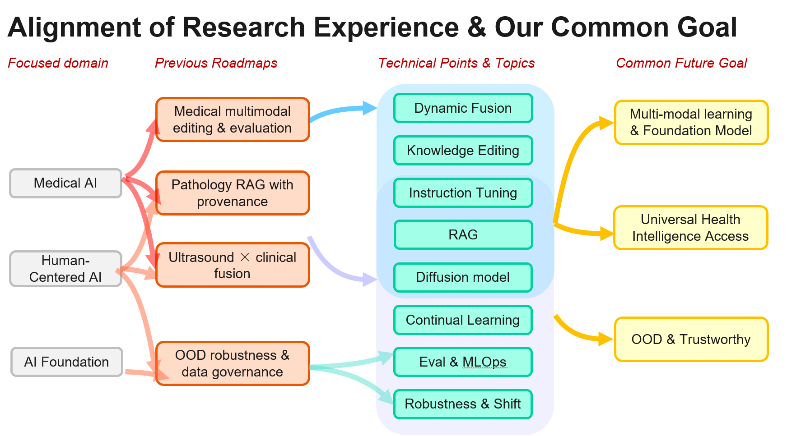

Research Interests
I am broadly interested in AI for science and human-centered applications, with a current concrete focus on medical AI, multimodal foundation models, trustworthy model adaptation, and evaluation.
Multimodal Foundation Models
Vision-language models, multimodal reasoning, representation learning, and model adaptation — how large multimodal models ground language in visual evidence and generalize across domains.
AI for Science & Healthcare
Applying AI to biomedical, clinical, and scientific discovery problems. My current concrete focus is medical AI — clinical imaging, medical visual question answering (Med-VQA, e.g., VQA-RAD, SLAKE, PathVQA, PMC-VQA), and multimodal biomedical data science.
Trustworthy & Reliable AI
Evaluation, robustness, model editing, uncertainty, and safe deployment. This is the throughline of my current work on M³Bench, a benchmark for reliable, localized model editing in medical vision-language models, and of the reproducible evaluation stacks (pre/post-edit scoring, automatic grading, evidence attribution, audit sampling) I build to support it.
Human-Centered AI & AI Agents
AI systems that interact with humans, tools, and environments. Beyond my current projects, I am developing emerging interests in vision-language-action (VLA) models and agentic systems as directions I hope to explore further.
Research Vision
A guiding theme across my projects is human-centered, multimodal AI: combining heterogeneous data sources (vision, language, structured records) with techniques for alignment, editing, and continual learning, evaluated not just on accuracy but on faithfulness, robustness under distribution shift, and reproducibility. Healthcare is my current proving ground for these ideas, but the underlying questions — how to adapt, evaluate, and trust large multimodal models — extend to AI for science more broadly.

My past and current projects — medical multimodal model editing and evaluation (M³Bench), pathology RAG with provenance, and ultrasound × clinical data fusion — feed into a common direction: multimodal learning and foundation models that are robust, editable, and trustworthy enough for deployment in science and healthcare alike. Looking ahead, I hope to extend these ideas toward broader multimodal reasoning, agentic systems, and AI for scientific discovery.
